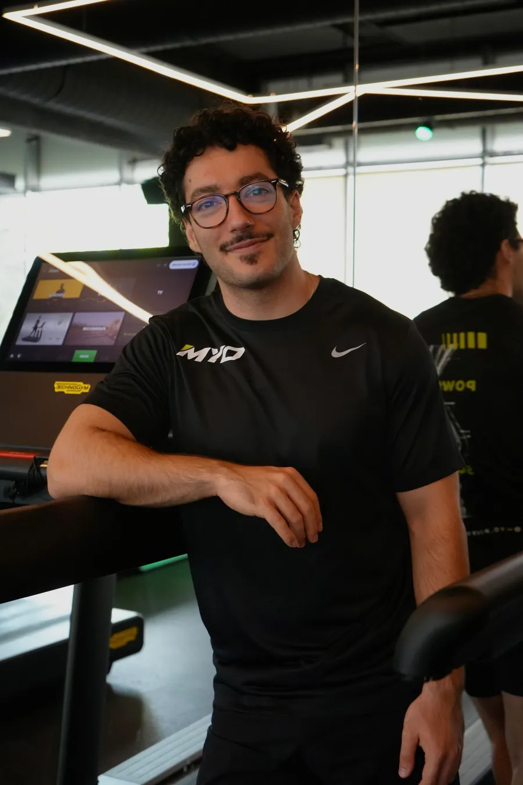

Democratizar la ciencia del deporte de élite
MYO Performance Lab nace para dar a corredores, ciclistas, triatletas y atletas de Hyrox/DEKA acceso a la misma precisión de laboratorio que antes solo tenían los deportistas de élite: test de VO2máx (CPET) y metabolismo en reposo (RMR) para conocer las zonas de entrenamiento reales — no las que estima una pulsera.

Soy un friki de la fisiología y el alto rendimiento. De los que se emociona viendo una gráfica de Wasserman. Llevo 10 años metido en esto. Sin atajos.
Empecé en 2016 con un CFGM en Actividades en el Medio Natural. De ahí al CFGS de Acondicionamiento Físico. Luego el Grado en Ciencias del Deporte, entre el INEFC y Millikin University (EE. UU.) — donde además pasé un tiempo en el laboratorio de bioquímica, investigando. Y no paré: Máster en Alto Rendimiento Deportivo (UCAM), Máster en Fisiología Deportiva (ICEN x UCAM), Entrenador Nacional y Juez de Halterofilia.
El lab lleva poco tiempo abierto pero ya llevamos +30 tests de VO2máx. Y eso es solo la punta del iceberg: en los últimos 3 años he entrenado a +50 atletas.
¿Por qué cuento todo esto? Porque MYO no nace de un curso de fin de semana ni de una moda. Nace de ver a cada vez más gente lanzarse a un Ironman, una maratón, un Hyrox o un DEKA — y entrenar a ciegas. Sin saber sus puntos fuertes, sus puntos débiles, ni sus zonas reales de entrenamiento. Fiándose de la estimación de un reloj que, muchas veces, va bastante desencaminada.
Mi motivación va más allá del negocio: quiero democratizar la fisiología deportiva. Que la precisión que antes solo tenía la élite, hoy la tenga cualquiera que empieza a competir.
Si estás preparando tu primer Ironman, tu maratón, un Hyrox, o simplemente ya no quieres entrenar adivinando — has llegado al sitio correcto. Esto es para ti.
CUESTIONAMOS LO ESTABLECIDO
Durante décadas se ha dicho que el ácido láctico es el culpable de las agujetas y de «quemar» el esfuerzo. No lo es. El lactato no es un residuo tóxico — es combustible que tu cuerpo reutiliza activamente durante el ejercicio.
El problema real no es «producir lactato», es entrenar tu capacidad de aclararlo a la velocidad que tu esfuerzo lo genera. Y eso no se adivina con una sensación de pierna — se mide.
Esto es exactamente lo que hace un test VO2máx bien hecho: identificar dónde está tu umbral real, no el que crees que tienes por cómo te sientes.